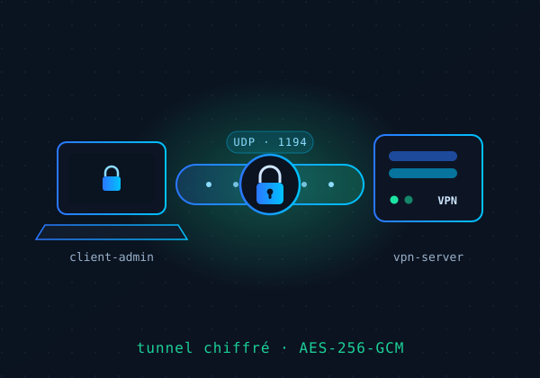
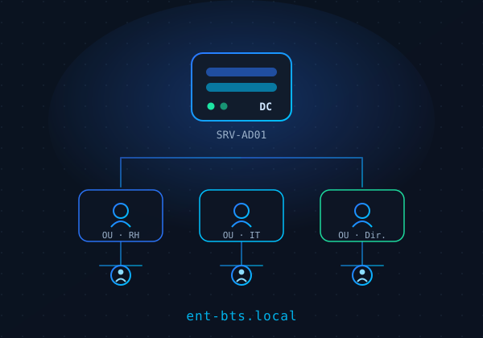

À propos de moi
Mon parcours, mes motivations et ce qui m'anime en tant que futur technicien IT.
Janvier 2026 – Aujourd'hui
Apprenti Support Informatique (alternance) – Sorel Energies
- Gestion et résolution des incidents informatiques niveaux 1 et 2
- Mise en place d'une procédure de sauvegarde des données
- Participation au déploiement d'un système de gestion des tickets et du parc informatique
2026 – 2027
BTS SIO SISR — 2e année – Iris, Paris
Formation en solutions d'infrastructure, systèmes et réseaux. Projets pratiques sur VPN, Active Directory et administration Linux.
2024 – 2025
BTS SIO SISR — 1re année – Éstiam, Paris
Projet : déploiement d'un serveur VPN sécurisé sous Linux avec script d'installation automatisé et génération du profil client administrateur.
Ce qui m'anime
- Résoudre des problèmes complexes
- Apprendre en continu
- Collaborer avec d'autres passionnés
Alternance en bref
- Recherche une alternance BTS SIO SISR — 2e année (2026-2027)
- Rythme : 2 jours école / 3 jours entreprise
- Disponible à la rentrée de septembre 2026
- Mobilité : Île-de-France (95 · Paris)
- Cible : support IT, systèmes & réseaux
Compétences
Une lecture rapide de mes compétences techniques à travers une interface terminal inspirée des environnements d'administration.
Réalisations
Projets
Des projets orientés infrastructure, automatisation et mise en pratique des environnements systèmes et réseau.

